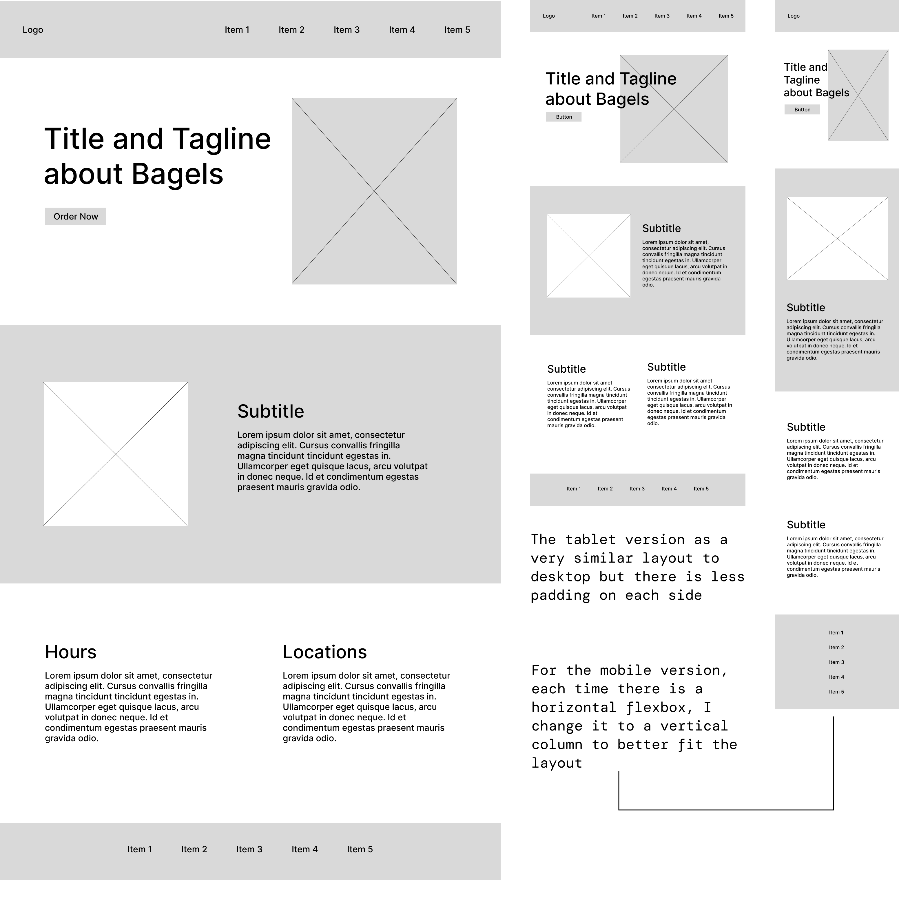

For this assignment we were tasked with redesigning and coding one page of a website while keeping accessibility and responsiveness in mind. I chose to redesign Bagel Gourmet's wesbite since it is one of my favorite resturants in Providence and the website hasn't been updated in many years. The food, workers, and physical restuarant location are top notch and I want to make sure that their website reflects that too.
 http://bagelgourmetcafe.com/
http://bagelgourmetcafe.com/
The original website has very outdate information and design. Overall the text is cluttered, the colors have low contrast, and the images are all layered over each other. Let's take a more in-depth look at the user pain points.
The WAVE accessibility tool revealed issues that I had mentioned about such as empty alt text, inconsistent type heirarchy, small text, and low color contrast. But there were a couple issues that I didn't catch such as not defining a language in the head of the html and there were a couple empty heading tags.

I wanted to keep generally the same informationand content as the original page, but change the layout to be much more clean and organized. I added three separate sections: the landing section, description of the restuarant, and then information on hours and locations.
Below is the lo-fi wireframe for all three screens and shows how the layout would be responsive.
In my style guide I included fonts, colors, and all the reusable components I had in my design. Since my the orginal website doesn't have a lot of content on the main page, I also don't have many interactive elements other than buttons and the nav bar.

Desktop

Tablet and Mobile

Here is the final product! My website is linked below if you want to check it out and play around with the responsiveness.
https://shyrhino123.github.io/bagel-gourmet-redesign/